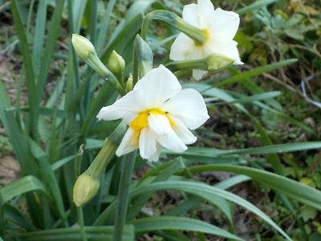
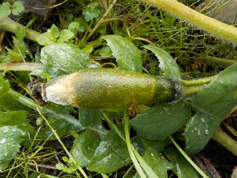
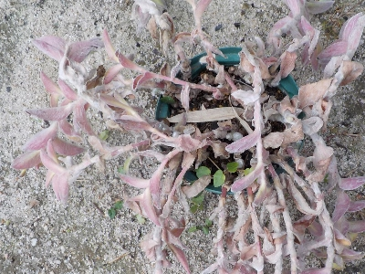

年末なので水仙咲いててもいい時期ですね。
2024/12/31

大晦日です。昔はお正月の準備したりこたつに入ってテレビ見てたな。
あー懐かしい。今日は外で色々作業してました。
2024/12/31

大晦日です。昔はお正月の準備したりこたつに入ってテレビ見てたな。
あー懐かしい。今日は外で色々作業してました。
2024/12/22

まだ育つかもと小さいカボチャを放置していたんですが、寒さでダメになっていました。
年末なので当たり前ですね。すぐに片付けるのが一番いいんですが、面倒ですね。
2024/12/01

ちょっと前まで緑色でしたが、急に赤くなってぐったりとなりました。
12月になって冬が始まった感じです。
過去の日記
畑仕事じゃないよ。